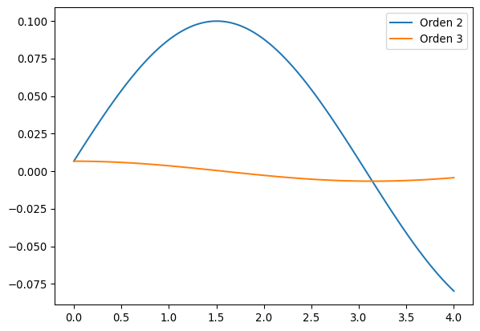
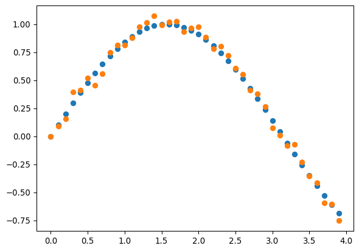
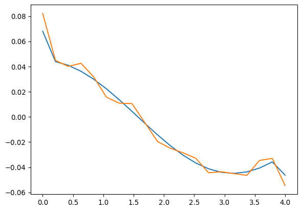

import numpy as np
import matplotlib.pyplot as pltDerivadas numéricas
En muchos casos la derivada de una función es fácil de calcular. Sin embargo con frecuencia la función se conoce sólo en algunos puntos (por ejemplo cuando es el resultado de una medición o de una simulación) y los métodos numéricos para tomar derivadas pueden resultar muy útiles.
Además, las derivadas numéricas forman parte fundamental de la solución numérica a ecuaciones diferenciales parciales (para modelar el clima, la fusión de dos agujeros negros, el colapso estelar, la turbulencia, entre muchos otros fenómenos). También son la base de los métodos de optimización en los cuales se basa el aprendizaje automático.
Diferencias finitas
Fórmula de dos puntos
Recordemos la definición de la derivada
\[ f'(x_o) = \lim_{h\rightarrow 0}\frac{f(x_o + h) - f(x_o)}{h} \]
Podemos entonces tomar un \(h\) lo suficientemente pequeño. Para obtener una estimación del error usamos la expansión de Taylor
\[ f(x_o + h) = f(x_o) + h f'(x_o) + \frac{1}{2}h^2 f''(\xi) \]
tal que
\[ f'(x_o) = \frac{f(x_o + h) - f(x_o)}{h} - \frac{1}{2}h f''(\xi) \]
El error es entonces
\[ \left|f'(x_o) - \frac{f(x_o + h) - f(x_o)}{h}\right| \leq \frac{h}{2}\,\text{max}_{x\in[x_o, x_o+h]}\,|f''(x)| \]
def deriv2p(f, x, h):
return (f(x + h) - f(x))/hTambién podríamos haber usado
\[ f'(x_o) = \frac{f(x_o) - f(x_o - h)}{h} + \frac{1}{2}h f''(\xi) \]
x = np.linspace(0,4,100)
exactas = np.cos(x)
aprox2 = [deriv2p(np.sin, xi, 0.2) for xi in x]
plt.plot(x, exactas, label='Exacta')
plt.plot(x, aprox2, label='Orden 2')
plt.legend()Fórmulas de más puntos
Para obtener una mejor precisión, podemos usar expansiones de Taylor a orden más alto. Tomemos
\[ f(x_o + h) = f(x_o) + h f'(x_o) + \frac{1}{2}h^2 f''(\xi) + \frac{h^3}{6}f^{(3)}(\xi) \]
Di queremos obtener \(f'(x_o)\), tenemos que combinar esta expresión con la evaluación en otros puntos para cancelar los términos proporcionales a \(f(x_o)\) y \(f''(x_o)\). En este caso es fácil
\[ f(x_o + h) - f(x_o - h) = 2h f'(x_o) + \mathcal{O}(h^3)\,, \]
tal que
\[ f'(x_o) =\frac{1}{2h}\left(f(x_o + h) - f(x_o - h)\right) + \frac{h^2}{6}f^{(3)}(\xi) \]
¡Obtenemos una mayor precisión (error cuadrático) haciendo un número igual de evaluaciones que la fórmula de dos puntos!
def deriv3p(f, x, h):
return (f(x + h) - f(x - h))/(2*h)x = np.linspace(0,4,100)
exactas = np.cos(x)
aprox2 = [deriv2p(np.sin, xi, 0.2) for xi in x]
aprox3 = [deriv3p(np.sin, xi, 0.2) for xi in x]
plt.plot(x, exactas - aprox2, label='Orden 2')
plt.plot(x, exactas - aprox3, label='Orden 3')
plt.legend()
Podemos encontrar otras expresiones para la derivada usando otras combinaciones de las expansiones de Taylor. Por ejemplo
\[ f'(x_o) =\frac{1}{2h}\left(- 3f(x_o) + 4f(x_o + h) - f(x_o + 2h)\right) + \frac{h^2}{3}f^{(3)}(\xi) \]
Esta fórmula sirve para estimar la derivada de una función en los bordes, cuando no conocemos \(f(x)\) para \(x < x_o\). También se puede usar cuando no conocemos la función para \(x > x_o\), en cuyo caso reemplazamos \(h \rightarrow -h\). Tiene dos desventajas respecto a la anterior: Necesita tres evaluaciones y el error es aproximadamente el doble.
def deriv3p_extremo(f, x, h):
return (-3*f(x) + 4*f(x + h) - f(x + 2*h))/(2*h)También podemos usar polinomios de más alto orden para obtener fórmulas de más puntos. Por ejemplo la fórmula de tres puntos tiene un error \((h^4/30)f^{(5)}(\xi)\).
def deriv5p(f, x, h):
return (f(x - 2*h) - 8*f(x - h) + 8*f(x + h) - f(x + 2*h))/(12*h)def deriv5p_extremo(f, x, h):
return (-25*f(x) + 48*f(x + h) - 36*f(x + 2*h) + 16*f(x + 3*h) - 3*f(x + 4*h))/(12*h)De manera análoga se pueden deducir fórmulas para derivadas de más alto orden (que necesitarán una mayor número de evaluaciones). Si consideramos la expansión de Taylor
\[ f(x_o + h) = f(x_o) + f'(x_o)h + \frac{1}{2}f''(x_o)h^2 + \frac{1}{6}f^{(3)}(x_o)h^3 + \frac{1}{24}f^{(4)}(\xi)h^4 \]
de donde vemos que
\[ f(x_o + h) + f(x_o - h) = 2f(x_o) + f''(x_o)h^2 + \frac{1}{12}f^{(4)}(\xi)h^4\,. \]
y entonces
\[ f''(x_o) = \frac{1}{h^2}\left(f(x_o + h) - 2f(x_o) + f(x_o - h)\right) - \frac{1}{12}f^{(4)}(\xi)h^2 \]
def segunda_deriv(f, x, h):
return (f(x + h) - 2*f(x) + f(x - h))/(h*h)Las diferencias finitas son inestables y ruidosas
Las derivadas numéricas sufren de una inestabilidad respecto a los errores de redondeo. Para verlo consideremos la fórmula a tres puntos y supongamos que el error de redondeo (o un error de la simulación) está acotado por un valor \(e\) y \(f(x) = \tilde{f}(x) + \delta(x)\) donde \(\tilde{f}\) es el verdadero valor, tal que \(\delta(x) \leq \Delta\). Entonces
\[ \left|f'(x_o) - \frac{1}{2h}\left(f(x_o + h) - f(x_o - h)\right)\right| \leq \left|\frac{1}{2h}(\delta(x_o + h) - \delta(x_o - h))\right| + \frac{h^2}{6} M \leq \frac{\Delta}{h} + \frac{h^2}{6} M \]
¡Al disminuir \(h\) aumentamos el primer término de este error!
x = np.arange(0, 4, 0.1)
datos_r = np.sin(x) + np.random.normal(0, 0.05, 40)
datos_e = np.sin(x)plt.scatter(x, datos_e)
plt.scatter(x, datos_r)
def deriv3_datos(fxo, fx2, h):
return (fx2 - fxo)/(2*h)
def deriv3_borde_datos(fxo, fx1, fx2, h):
return (-3*fxo + 4*fx1 - fx2)/(2*h)
def deriv_datos(fx, h):
n = len(fx)
deriv = np.zeros(n)
for i in range(n):
if i == 0:
deriv[i] = deriv3_borde_datos(fx[0], fx[1], fx[2], h)
elif i == n - 1:
deriv[i] = deriv3_borde_datos(fx[n-1], fx[n-2], fx[n-3], -h)
else:
deriv[i] = deriv3_datos(fx[i-1], fx[i+1], h)
return deriv
return (fx2 - fxo)/(2*h)num = 20
x = np.linspace(0, 4, 20)
h = 4/num
datos_e = np.sin(x)
datos_r = np.sin(x) + np.random.normal(0, 0.001, num)
plt.plot(x, deriv_datos(datos_e, h) - np.cos(x))
plt.plot(x, deriv_datos(datos_r, h) - np.cos(x))
Autodiff
Existe un método que solo recientemente goza de atención (gracias a su aplicación en aprendizaje automático) que permite el cálculo exacto de derivadas de manera automática (sin tener que calcular nada a mano). Además no tiene ninguna inestabilidad numérica. Adicionalmente, para un gran número de variables es más eficiente.
Sin embargo tiene dos desventajas:
Si te dan la función como una lista de números, no se puede aplicar. Es necesario conocer la función o calcularla al mismo tiempo que la derivada.
Requiere típicamente más memoria RAM.
La idea detrás de la autodiferenciación
La idea es sencilla: Conocemos las derivadas de cualquier función sencilla y para las demás usamos la regla de la cadena.
Por ejemplo, supongamos que queremos tomar la derivada del coseno. Existen librerías que tuenen tabuladas las derivadas para muchas funciones. Aquí usamos jax.
# derivada_cos_autodiff_vs_finitas.py
# Comparar derivadas con autodiff (JAX) y con diferencias finitas para cos(x)
import numpy as np
import matplotlib.pyplot as plt
import jax
import jax.numpy as jnp
from jax import grad, vmap
# --- Función ---
def f(x):
return jnp.cos(x)
# --- Derivada con autodiff (JAX) ---
df_dx_scalar = grad(f) # derivada escalar
df_dx_ad = vmap(df_dx_scalar) # vectorizar para arreglos
# --- Malla y verdad analítica ---
x = np.linspace(-2*np.pi, 2*np.pi, 400)
f_real = np.cos(x)
df_real = -np.sin(x)
# --- Diferencias finitas (central, con np.gradient) ---
df_fd = np.gradient(f_real, x)
# --- Derivada con autodiff ---
df_ad = np.array(df_dx_ad(jnp.array(x)))
# --- Gráfico ---
plt.figure(figsize=(7,4))
plt.plot(x, df_fd/df_real - 1, "--", label="Diferencias finitas (np.gradient)")
plt.plot(x, df_ad/df_real - 1, ":", label="Autodiff con JAX (grad)")
plt.xlabel("x")
plt.ylabel("derivada")
plt.title("Error relativo de la derivada de cos(x)")
plt.legend()
plt.tight_layout()
plt.show()
# --- Errores L2 ---
def error_L2(a, b):
return np.sqrt(np.mean((a - b)**2))
print("Error L2 comparado con -sin(x):")
print(f" Diferencias finitas : {error_L2(df_fd, df_real):.3e}")
print(f" Autodiff (JAX) : {error_L2(df_ad, df_real):.3e}")An NVIDIA GPU may be present on this machine, but a CUDA-enabled jaxlib is not installed. Falling back to cpu.
Error L2 comparado con -sin(x):
Diferencias finitas : 1.120e-03
Autodiff (JAX) : 6.453e-08¿Qué pasa cuando tenemos una función más complicada? En ese caso usamos la regla de la cadena. Por ejemplo, si tenemos una función \(f(w(x), v(x))\) y queremos calcular la derivada respecto a \(x\) hacemos
\[ \frac{d}{dx}f = \frac{\partial f}{\partial w}\frac{dw}{dx} + \frac{\partial f}{\partial v}\frac{dv}{dx}\,. \]
Para poner un ejemplo más concreto, si queremos derivar \(f(x) = \cos(x)e^x + \sin(x)\), usamos
\[ \frac{d}{dx} (f + g) = \frac{d}{dx} f + \frac{d}{dx} g\,, \]
\[ \frac{d}{dx}(fg) = f \frac{d}{dx} g + g \frac{d}{dx} f\,, \]
\[ \frac{d}{dx}\cos(x) = -\sin(x)\,,\quad \frac{d}{dx}\sin(x) = \cos(x)\,,\quad \frac{d}{dx}e^x = e^x\,. \]
Entonces
\[ \frac{d}{dx}((\cos(x)e^x) + \sin(x)) = \frac{d}{dx}(\cos(x)e^x) + \frac{d}{dx}(\sin(x))\,, \]
Ahora seguimos aplicando la regla de la cadena
\[ \frac{d}{dx}(\cos(x)e^x + \sin(x)) = \cos(x)\frac{d}{dx}e^x + e^x\frac{d}{dx}\cos(x) + \cos(x) = e^x\cos(x) - \sin(x)e^x + \cos(x)\,, \]
Autodiferenciación en modo directo
La autodiferenciación se usa cuando tenemos que calcular un gran número de derivadas. Esto ocurre por ejemplo en la solución numérica de ecuaciones diferenciales parciales, o en el aprendizaje automático donde se toma el gradiente de una función de costo respecto a miles de millones de parámetros.
En general, estos problemas se reducen a tomar la derivada del vector \(\vec{f} = (f_1, f_2, \ldots, f_n)\) con respecto a muchos parámetros \(\vec{x} = (x_1, x_2, \ldots, x_m)\), esto es
\[ \frac{\partial \vec{f}}{\partial \vec{x}} = \begin{pmatrix} \frac{\partial f_1}{\partial x_1} & \frac{\partial f_1}{\partial x_2} & \ldots & \frac{\partial f_1}{\partial x_m}\\ \frac{\partial f_2}{\partial x_1} & \frac{\partial f_2}{\partial x_2} & \ldots & \frac{\partial f_2}{\partial x_m}\\ \vdots & \vdots & \ddots & \vdots\\ \frac{\partial f_n}{\partial x_1} & \frac{\partial f_n}{\partial x_2} & \ldots & \frac{\partial f_n}{\partial x_m} \end{pmatrix}\,. \]
Esta \(f\) puede ser por ejemplo una red neuronal. En general, esta es una función complicada que se expresa como la composición de varias funciones simples, por ejemplo \(\vec{f}(w_1(\vec{x}), w_2(\vec{x}), \ldots, w_\ell(\vec{x}))\). Entonces nuestra derivada toma la forma
\[ \frac{\partial f_i}{\partial x_j} = \sum_k\frac{\partial f_i}{\partial w_k}\frac{\partial w_k}{\partial x_j}\,. \]
Esta no es otra que una multiplicación de matrices. En general
\[ \frac{\partial \vec{f}}{\partial \vec{x}} = \frac{\partial \vec{f}}{\partial \vec{w}^{(1)}}\frac{\partial \vec{w}^{(1)}}{\partial \vec{w}^{(2)}}\ldots\frac{\partial \vec{w}^{(s)}}{\partial \vec{x}}\,. \]
Esto parece un ejemplo artificial, pero algo así puede ocurrir en ecuaciones diferenciales. Por ejemplo supongamos que queremos modelar algunas características de un fluido \(\vec{f}\) (presión, temperatura, etc) que a su vez van a depender de una serie de variables termodinámicas \(\vec{w}\), que a su vez dependen de la posición del elemento de fluido \(\vec{x}\) que depende del tiempo \(t\). Por simplicidad tomemos \(\vec{f}, \vec{w}\) y \(\vec{x}\) como vectores de dimensión 3. Queremos calcular la derivada
\[ \frac{d\vec{f}}{dt} = \underbrace{\frac{\partial \vec{f}}{\partial \vec{w}}}_{3\times 3} \;\underbrace{\frac{\partial \vec{w}}{\partial \vec{x}}}_{3\times 3} \;\underbrace{\frac{d\vec{x}}{dt}}_{3\times 1} \]
Como estamos estudiando métodos numéricos, queremos minimizar la cantidad de operaciones. Cada fila por columna de una multiplicación matricial son \(3\) multiplicaciones y \(3\) sumas.
La manera más eficiente sería multiplicar primero la matriz por el vector a la derecha. De esta forma tenemos un nuevo vector para multiplicar por la matriz restante. El total de operaciones es \(3\times 6 + 3\times 6 = 36\). En cambio si empezamos por multiplicar las dos matrices de la izquierda, el total de operaciones sería \(3\times 3\times 6 + 3\times 6 = 72\). La diferencia es más pronunciada aún si aumentamos el número de variables o dimensiones.
Empezar por la derecha se llama “autodiferenciación en modo directo” (forward mode autodiff). Es el modo más eficiente si tenemos una función de muchos componentes (\(\vec{f}\) en nuestro caso) que depende de pocos parámetros (\(t\) en nuestro caso). Además usa menos RAM que el modo inverso.
Autodiferenciación en modo inverso
En aprendizaje automático tenemos usualmente lo contrario: Una función de pocas componentes que depende de muchos parámetros. En este caso es más eficiente multiplicar desde la derecha, lo que se llama autodiferenciación en modo inverso (reverse mode autodiff). Para un ejemplo sencillo, supongamos que \(f\) (con una sola componente) depende de tres cantidades \(\vec{w}^{(1)}\) que a su vez dependen de otras tres cantidades \(\vec{w}^{(2)}\) que a su vez dependen de tres entradas \(\vec{x}\)
\[ \frac{\partial f}{\partial\vec{x}} = \underbrace{\frac{\partial f}{\partial\vec{w}^{(1)}}}_{1\times 3} \underbrace{\frac{\partial\vec{w}^{(1)}}{\partial\vec{w}^{(2)}}}_{3\times 3} \underbrace{\frac{\partial\vec{w}^{(2)}}{\partial\vec{x}}}_{3\times 3}\,. \]
Vemos que en este caso es más eficiente ultipicar primero por la derecha, obteniendo \(36\) operaciones en vez de \(72\). Cuando aumenta el número de variables y parámetros la diferencia es aún mayor. La autodiferenciación en modo inverso es más eficiente cuando tenemos una función de pocos componentes que depende de muchas variables o parámetros. Por ejemplo en redes neuronales pueden ser miles de millones de parámetros tal que aplicar el modo inverso es crucial.
Sin embargo hay una dificultad. Para entenderla, consideremos la función compuesta \(f(g(h(x)))\). Cuando la queremos evaluar empezamos desde la derecha, es decir evaluamos primero \(z = h(x)\), luego \(y = g(z)\) y finalmente \(f(y)\). Es decir, evualuamos la función desde la derecha.
Para derivar aplicamos la regla de la cadena
\[ \frac{d}{dx} f(g(h(x))) = f'(g(h(x)))\times g'(h(x))\times h'(x)\,. \]
Vemos que si queremos efectuar diferenciación en modo incerso, necesitamos primero calcular \(f'(g(h(x)))\), para lo cual necesitamos \(g(h(x))\). Después debemos calcular \(g'(h(x))\) para lo cual necesitamos saber \(h(x)\), y así sucesivamente. En pocas palabras, necesitamos los pasos intermedios de la evaluación de la función compuesta.
Para lograrlo, primero hacemos un paso hacia adelante (“forward pass”) donde evaluamos \(f(g(h(x)))\). En este, guatdamos en memoria todos los resultados intermedios (\(g(h(x)), h(x),\)) en la memoria (en una estructura llamada “tape”). Luego hacemos un paso hacia atrás (“reverse pass”) donde evaluamos \(f'(g(h(x)))\) usando los resultados guardados en la memoria.
Tareas
Tarea 8.1
Los siguientes datos corresponden al cálculo numérico de una cierta propiedad estadística de la distribución de materia en el universo (el espectro de potencias) \(P(k)\) (segunda columna) en función del modo de Fourier \(k\) (primera columna).
Use la derivada numérica para encontrar \(d\ln P/d\ln k\) en cada punto (es decir, la derivada del logaritmo de \(P\) respecto a \(y\) donde \(y = \ln k\)).
Para estimar el error cometido en esta derivada numérica compare el resultado de la fórmula a tres puntos con el resultado de la fórmula a cinco puntos. Será necesario usar las fórmulas a tres y cinco puntos en los extremos que se encuentran en este mismo notebook.
datos = np.array([ [5.531683013105e-04, 1.070304113861e+12],
[5.910227121702e-04, 1.139622191891e+12],
[6.315688849627e-04, 1.213481232452e+12],
[6.750065137883e-04, 1.292169597309e+12],
[7.215301959429e-04, 1.375954296780e+12],
[7.713235180257e-04, 1.465069697719e+12],
[8.245525173319e-04, 1.559705507566e+12],
[8.813589235833e-04, 1.659994890361e+12],
[9.418537183337e-04, 1.766003776663e+12],
[1.006111625261e-03, 1.877722471320e+12],
[1.074167130425e-03, 1.995060685935e+12],
[1.146012510269e-03, 2.117846703996e+12],
[1.221598126720e-03, 2.245831037960e+12],
[1.300834972303e-03, 2.378694410099e+12],
[1.383599172303e-03, 2.516052095865e+12],
[1.469737934874e-03, 2.657475892684e+12],
[1.559076324033e-03, 2.802524407596e+12],
[1.651424225675e-03, 2.950729179407e+12],
[1.746582964833e-03, 3.101618970269e+12],
[1.844351177716e-03, 3.254730780491e+12],
[1.944529704896e-03, 3.409618695392e+12],
[2.046925420592e-03, 3.565860320889e+12],
[2.151354028418e-03, 3.723061333248e+12],
[2.257641930146e-03, 3.880858018481e+12] ])Tarea 8.2
Encuentre la separación óptima entre puntos para el ejemplo con ruido hecho en clase.
Tarea 8.3
Considere la función:
\[ f(x, y) = \ln(xy) + x^2 y - \cos(y) \]
- Construya el grafo computacional que representa la función.
- Realice una pasada hacia adelante para calcular los valores de todas las variables intermedias en el punto $ x = 2 $, $ y = 1 $.
- Simultáneamente, calcule las derivadas con respecto a $ x $ en cada nodo utilizando las reglas de autodiferenciación en modo directo.
Tarea 8.4
Dada la función:
\[ f(u, v) = e^{uv} + u \sin(v) + v^3 \]
- Construya el grafo computacional con nodos para cada operación, indicando claramente las dependencias y descomponiéndolo en nodos.
- Realice una pasada hacia adelante en el punto \(u = 0\) \(v = \pi/2\), calcule y registre el valor de cada nodo.
- Realice una pasada hacia atrás, inicializando la derivada del nodo de salida en el resultado obtenido en el paso anterior y propagando gradientes hacia atrás a través del grafo utilizando la regla de la cadena.
- Calcule los valores finales de $ $ y $ $.
Tarea 8.5
Considere los siguientes datos que son el resultado de cinco simulaciones muy costosas.
| \(\sigma\) | \(n\) |
|---|---|
| \(0.75\) | \(1.1324\times 10^{-3}\) |
| \(0.77\) | \(1.1376\times 10^{-3}\) |
| \(0.79\) | \(1.1386\times 10^{-3}\) |
| \(0.81\) | \(1.1454\times 10^{-3}\) |
| \(0.83\) | \(1.1474\times 10^{-3}\) |
Estime la derivada de \(n\) respecto a \(\sigma\) así como el error cometido en \(\sigma = 0.79\).
Para estimar la derivada, use la fórmula a tres puntos dada en clase.
Para estimar el error use la fórmula de error. Esta fórmula del error contiene una tercera derivada. Esta tercera derivada se puede obtener a partir de una fórmula a cinco puntos para la tercera derivada.
Para encontrar la expresión para la tercera derivada a cinco puntos use la expansión en Taylor de \(f(x_o + h)\), \(f(x_o - h)\), \(f(x_o + 2h)\) y \(f(x_o - 2h)\).
Además considere el hecho que \(n\) tiene un ruido (\(\Delta n = 10^{-6}\)). Compare con lo anterior para saber si el tamaño \(h\) del paso fue el adecuado. ¿Es necesario un paso más pequeño o más grande?